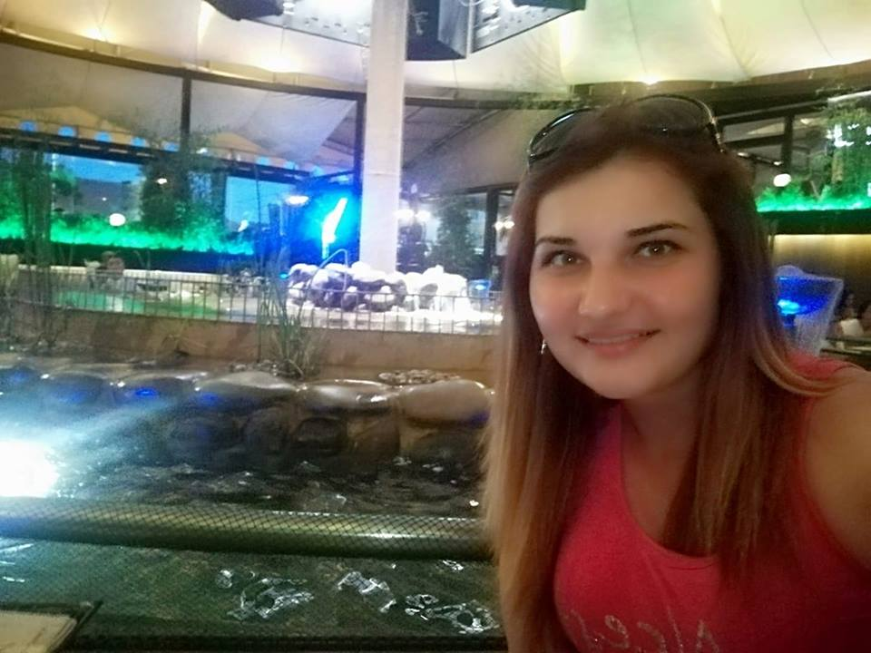

|
Buna,prietenii! Eu sunt Raluca şi iubesc să călătoresc. Sunt născută şi crescută în Oltenia,şcolită în Braşov şi plimbată prin Europa şi Africa. Nu există loc pe care să nu vreau să-l văd. Acolo unde oamenii, de regulă, nu văd nimic interesant,eu găsesc o lume nouă, diferită, culori, mirosuri, gusturi, sunete, obiceiuri, poveşti deosebite. Si cred că în asta se măsoară pasiunea de a călători. Destinaţiile mele până acum sunt: România, Anglia, Austria, Grecia, Bulgaria şi Egipt. Următoarea destinaţie: BARCELONA "Lumea este o carte,iar cei care nu calatoresc,citesc doar o pagina".Augustin de Hipona |
 |